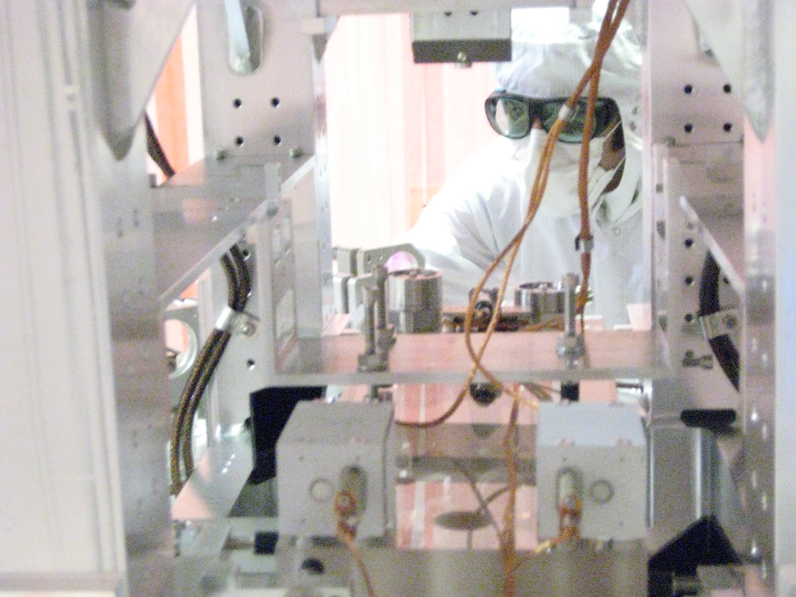
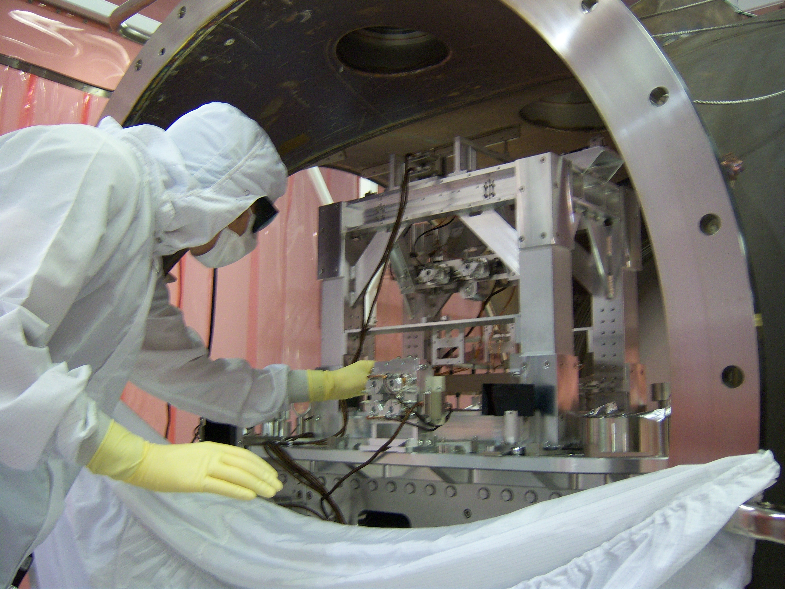
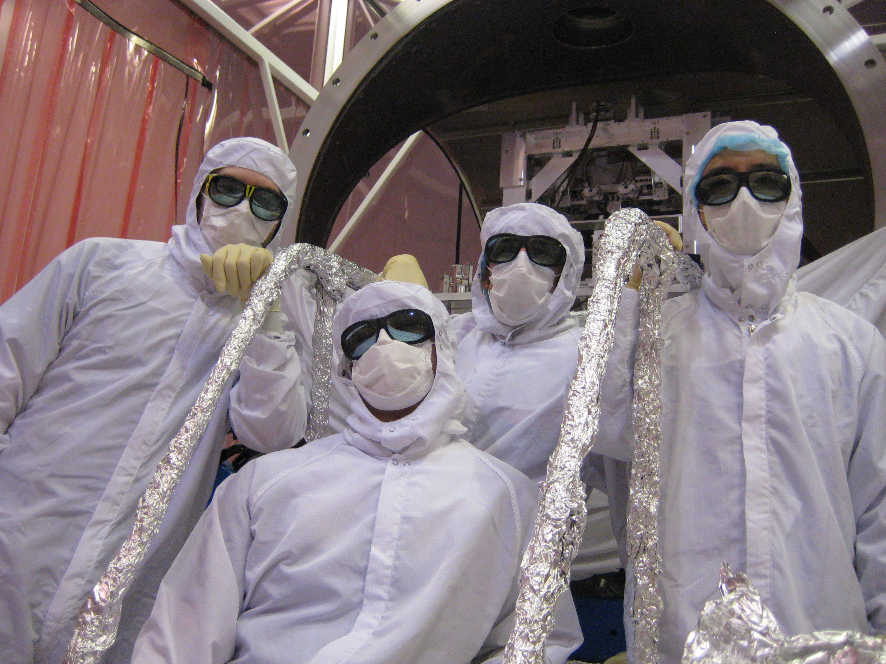

Photos from the LIGO Hanford Observatory
The LIGO Hanford Observatory (LHO) in Hanford, WA is one of two observatories operated by LIGO--the other one is Livingston, LA.
LHO has two interferometers, one with 4 km arms (H1) and a smaller 2 km interferometer (H2).
Gravitational waves change the relative lengths of each arm by tiny amounts corresponding to strains < O(10-22) Hz-1/2.
We deduce these strains by measuring the light emitted from the interferometers' dark port.

In this photo I'm working in the HAM 6 chamber, which houses the output mode cleaner (OMC)--one of the new features of Enhanced LIGO.
(The OMC is housed in the metal cage in front of me.)
During normal operation this chamber is kept in vacuum.
While in the chamber we wear clean suits to minimize detritus, which can adversely affect the sensitive optics.

This photo shows the OMC from a different angle.
The component by my left hand is one of the "tip-tilt" mirrors, TT2.

With colleagues (from left to right): Nic Smith, David Yeaton-Massey, me, Keita Kawabe.
Home